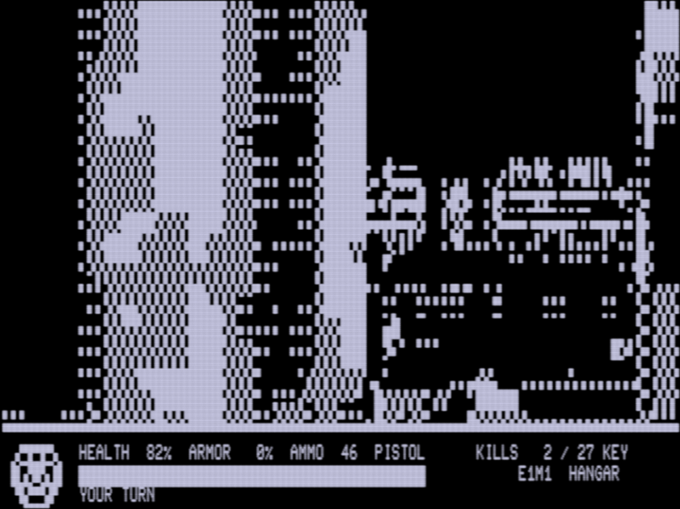
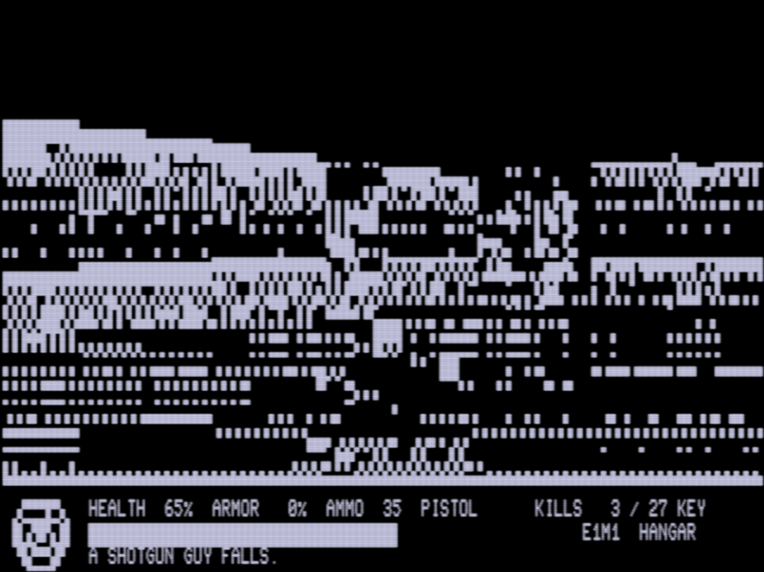
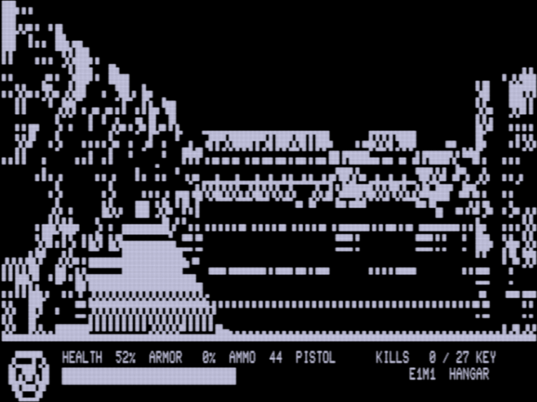
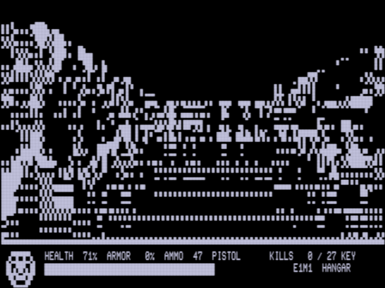
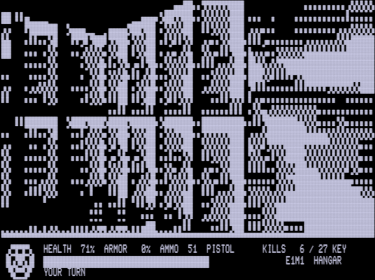

Freedoom's first level, E1M1, running on a stock Model 4. The machine has no bitmap screen, so I draw the view with the character set's 2 × 3 block characters. The status bar is plain text, and the sound comes from the one-bit speaker.
A nod to Leo Christopherson's Dancing Demon (1979) for the TRS-80. This demon is my own drawing in the same block characters, not his.
This is the first running demo. I welcome collaboration: ideas, fixes, pull requests, and above all reports from real Model 4s.
I left out some hacks that don't seem to work on every Model 4. This could be pushed a bit further.
Eight minutes in trs80gp, set up as an original Model 4, at normal speed with sound. TRSDOS boots, the program loads, and the computer plays E1M1 (press T to let it): it walks, fights, and presses the exit switch more than once.





./setup.sh # zmac, trs80gp, and a Freedoom checkout ./run.sh # TRSDOS 6 boots and runs DOOM/CMD make test # the checks
On a real Model 4 with 128 KB, copy DOOM/CMD to a TRSDOS 6 or LS-DOS 6 disk and
type DOOM.
| W / ↑ S / ↓ | forward / back |
| A / ← D / → | turn |
| SPACE | open a door, press the exit switch |
| F or CTRL | fire |
| T | the computer plays; T again takes it back |
| BREAK | quit |